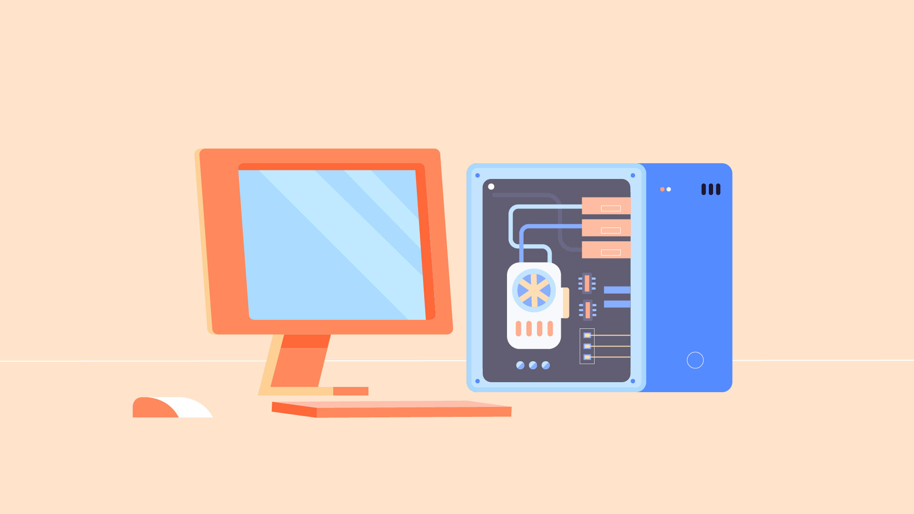

Computer Basics - About This Tutorial
About this tutorial
This tutorial will help you understand how computers work and how to use them. We'll talk about how to set up a computer, the difference between hardware and software, and the types of computers you can use. We'll also explore operating systems, applications, the cloud, and a whole lot more.

Whether you're getting started with your first computer or are just looking to learn more about how they work, you'll find all of the information you need in our written lessons, videos, and interactives. When you're done, you'll have a fundamental understanding of how to use a computer. You'll also be ready to learn even more about computers with some of our other tutorials.
So what are you waiting for? Let's get started!
What is a computer?
A computer is an electronic device that manipulates information, or data. It has the ability to store, retrieve, and process data. You may already know that you can use a computer to type documents, send email, play games, and browse the Web. You can also use it to edit or create spreadsheets, presentations, and even videos.
Hardware vs. software
Before we talk about different types of computers, let's talk about two things all computers have in common: hardware and software.
Hardware is any part of your computer that has a physical structure, such as the keyboard or mouse. It also includes all of the computer's internal parts, which you can see in the image below.

Software is any set of instructions that tells the hardware what to do and how to do it. Examples of software include web browsers, games, and word processors.

Everything you do on your computer will rely on both hardware and software. For example, right now you may be viewing this lesson in a web browser (software) and using your mouse (hardware) to click from page to page. As you learn about different types of computers, ask yourself about the differences in their hardware. As you progress through this tutorial, you'll see that different types of computers also often use different types of software.
What are the different types of computers?
When most people hear the word computer, they think of a personal computer such as a desktop or laptop. However, computers come in many shapes and sizes, and they perform many different functions in our daily lives. When you withdraw cash from an ATM, scan groceries at the store, or use a calculator, you're using a type of computer.

Desktop computers
Many people use desktop computers at work, home, and school. Desktop computers are designed to be placed on a desk, and they're typically made up of a few different parts, including the computer case, monitor, keyboard, and mouse.
Laptop computers

The second type of computer you may be familiar with is a laptop computer, commonly called a laptop. Laptops are battery-powered computers that are more portable than desktops, allowing you to use them almost anywhere
Tablet computers

Tablet computers —or tablets —are handheld computers that are even more portable than laptops. Instead of a keyboard and mouse, tablets use a touch-sensitive screen for typing and navigation. The iPad is an example of a tablet.
Servers
A server is a computer that serves up information to other computers on a network. For example, whenever you use the Internet, you're looking at something that's stored on a server. Many businesses also use local file servers to store and share files internally.
Other types of computers
Many of today's electronics are basically specialized computers, though we don't always think of them that way. Here are a few common examples.
> Smartphones: Many cell phones can do a lot of things computers can do, including browsing the Internet and playing games. They are often called smartphones.
> Wearables: Wearable technology is a general term for a group of devices—including fitness trackers and smartwatches —that are designed to be worn throughout the day. These devices are often called wearables for short.
> Game consoles: A game console is a specialized type of computer that is used for playing video games on your TV.
> TVs: Many TVs now include applications —or apps —that let you access various types of online content. For example, you can stream video from the Internet directly onto your TV.
PCs and Macs
Personal computers come in two main styles: PC and Mac. Both are fully functional, but they have a different look and feel, and many people prefer one or the other.
PCs
This type of computer began with the original IBM PC that was introduced in 1981. Other companies began creating similar computers, which were called IBM PC Compatible (often shortened to PC ). Today, this is the most common type of personal computer, and it typically includes the Microsoft Windows operating system.
Macs

The Macintosh computer was introduced in 1984, and it was the first widely sold personal computer with a graphical user interface, or GUI (pronounced gooey ). All Macs are made by one company (Apple), and they almost always use the Mac OS X operating system.